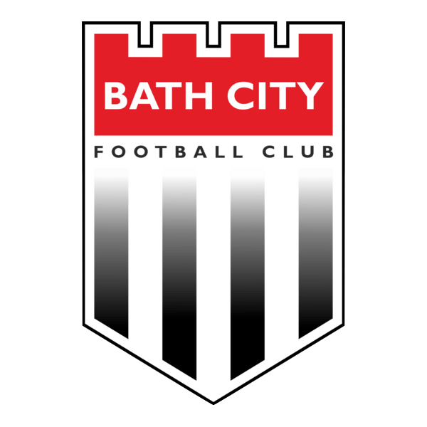
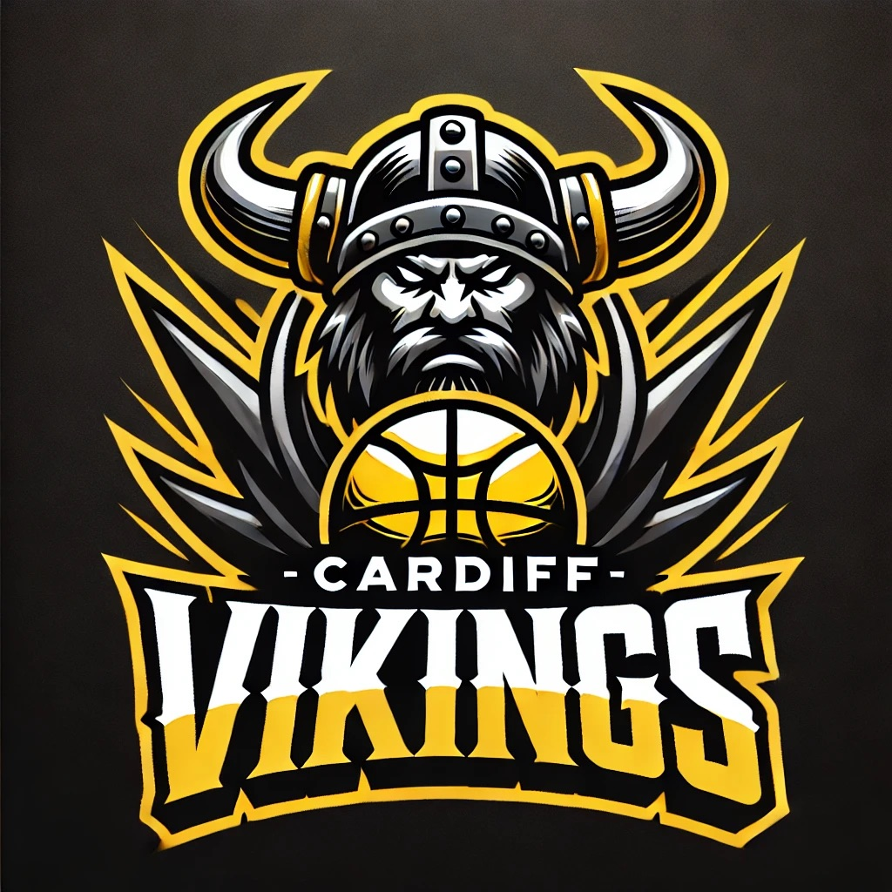

My Work
Explore a selection of analysis projects I've completed across football, squash, rugby, basketball, netball, and more.

PSA Squash
Provide in-depth, real-time coding and comprehensive pre- and post-game analysis.

UEFA Champions League Borussia Dortmund vs Shakhtar Donetsk/h3>
Live coding and post-match review for Borussia Dortmund vs Shakhtar Donetsk helping the UEFA Techical Observer.
Bath City FC Opposition & Set-Piece Analysis
Built a set-piece database and tactical plans for National League South side.
Squash Dissertation: Rally Intensity
Used rally intensity metrics to examine performance and world rankings.
Cardiff Vikings Basketball Club
Launched and analysed a semi-professional basketball team with strategic development.
Netball Performance Review
Tagged and reviewed university-level netball matches with insights.
Cricket Video Analysis
Trialled tagging and data feedback loops for club-level and university cricket.
Team GB Taekwondo Performance Insights
Post-competition analysis and feedback to elite Taekwondo athletes and staff.
RFU Rugby Head Contact Tagging
Tagged head contact events for national rugby research study.
University Women's Basketball Coaching
Designed training, ran matches, and applied performance insights to coaching.